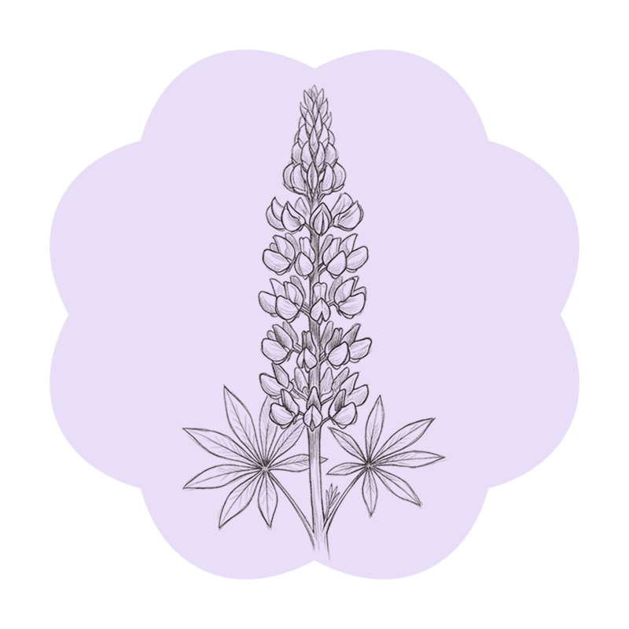

Went for a walk in Miller Park today. Needed to get out of the house, and it was actually pretty nice out. Plus, I wanted to see if any wildflowers were popping up.

I ended up finding a few patches of lupine and a single purple iris tucked away near the creek. The light was soft, so I snapped a few photos to use later when I’m painting.
Today the creek was louder than the birds, which surprised me. I stood still for a minute near the bend where the water slows down, and the sound of the current became a steady hum. A red-winged blackbird called out from the reeds, and for a few seconds, everything else went quiet. It was the kind of stillness that feels like a pause, not an absence of sound. I noticed how the light changed when the breeze picked up—shifting from warm to cool in a way that made the whole walk feel more alive.